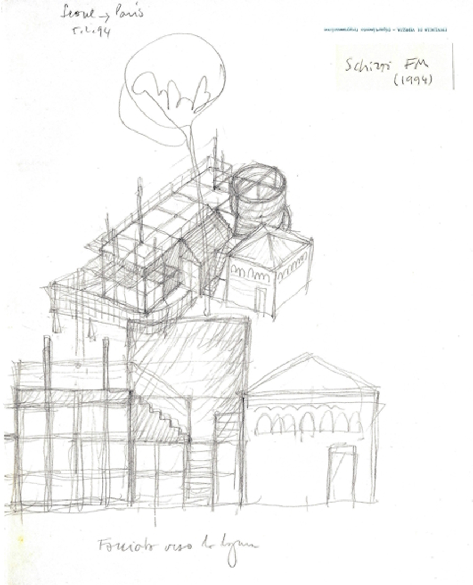
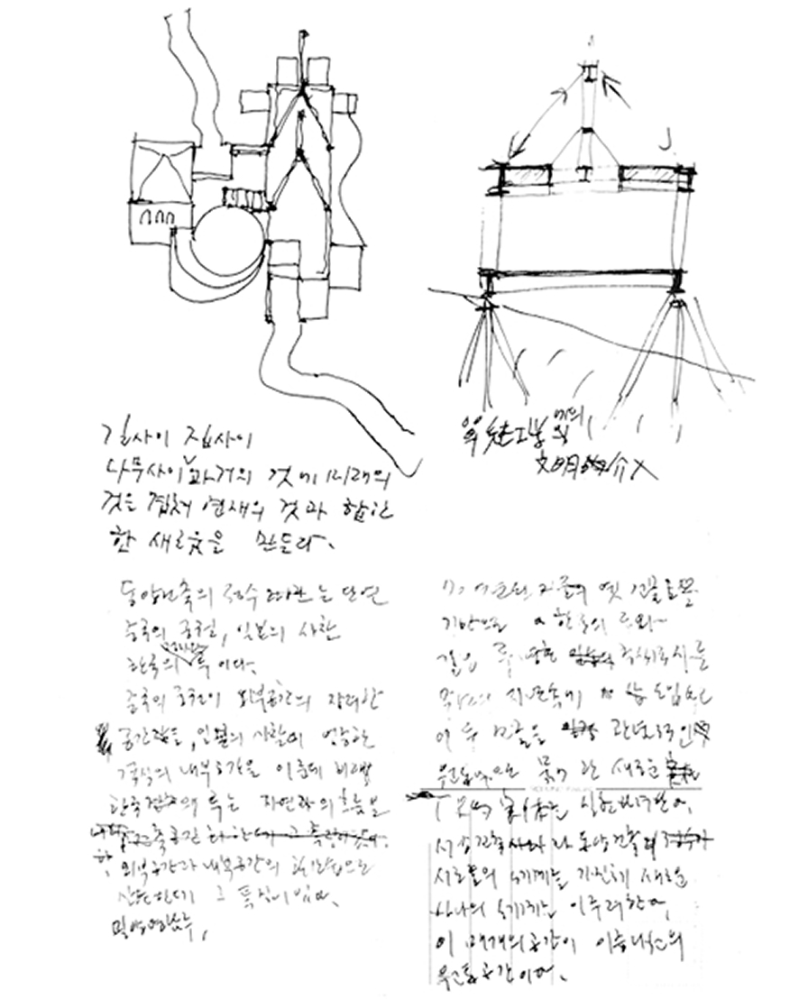

예술가의 공간
제61회 베니스비엔날레(2026) 한국관 전시 공간을 3D-VR로 기록하고, 출품 작품·도록·평론·설치 사진과 함께 일회성 전시를 시간을 넘어 체험할 수 있습니다.
한국관은 서울의 김석철과 베니스의 프랑코 만쿠조 두 건축가의 협업으로 설계되었습니다. 1993 년부터 1995 년까지 두 사람은 팩스로 스케치와 도면을 주고받으며 설계를 진행했고, 베니스 현지의 인허가 기관들과의 협의 속에서 계획안은 여러 차례 바뀌었습니다. 2023 년 만쿠조가 이 설계 과정의 기록 일체를 아르코예술기록원에 기증하면서, 건물이 만들어진 경위를 보여주는 기록이 한자리에 모였습니다.
<Tracing the Korean Pavilion in Venice>는 이 기록에 근거해 1993 년부터 1995 년까지 한국관 설계가 지나온 여덟 단계를 3D 모델로 재구성한 아카이브 웹 콘텐츠입니다. 각 단계의 모델에는 근거가 된 기록물의 참조코드와 함께, 도면만으로 확인되지 않아 추론이 필요했던 부분을 밝힌 해석 주석이 달려 있습니다. 지어지지 않은 계획안들은 여기에서 처음 입체의 형태를 얻습니다.


The Korean Pavilion was designed in collaboration between two architects — Kim Seok Chul in Seoul and Franco Mancuso in Venice. From 1993 to 1995, the two developed the design through sketches and drawings exchanged by fax, and the plans changed repeatedly through consultations with the various permitting authorities in Venice. In 2023, Mancuso donated all the design records in his keeping to the ARKO Arts Archive, gathering in one place the documents that show how the building came to be.
Tracing the Korean Pavilion in Venice is a web-based archive project that draws on these records to reconstruct as 3D models the eight design stages through which the Korean Pavilion’s design passed between 1993 and 1995. Each model carries the reference codes of the records it is based on, along with interpretive annotations identifying the parts that could not be confirmed from the drawings alone and had to be inferred. Here the unbuilt plans take on three-dimensional form for the first time.
아르코예술기록원은 2015년부터 베니스비엔날레 한국관의 전시와 공간, 운영에 관한 기록을 수집해 왔으며, 2019년과 2023년, 2024년 세 차례에 걸쳐 한국관 건립과 운영에 참여한 이들의 구술채록을 진행했습니다. 베니스비엔날레 한국관 컬렉션은 기록물 열람예약 후 아르코예술기록원 본원에서 열람할 수 있습니다.
Since 2015, the ARKO Arts Archive has collected records documenting the exhibitions, spaces, and operation of the Korean Pavilion at the Venice Biennale, and across three rounds in 2019, 2023, and 2024, it recorded the oral histories of those involved in building and running the Pavilion. The Venice Biennale Korean Pavilion Collection may be consulted on site at the ARKO Arts Archive. Advance booking is required.